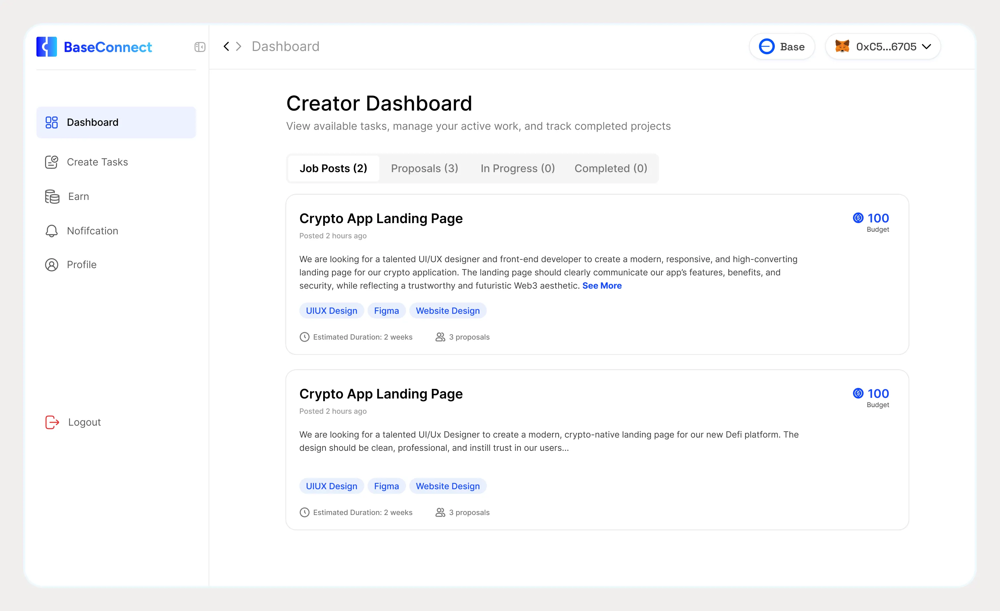

Overview
BaseConnect is a Web3 marketplace that connects clients and founders who need talent with people who have the skills to offer. I was the Lead Product Designer, responsible for research, flows, interface design and handoff.
Clients and founders can post work and find the right person for it. Talent can show their skills and find jobs that fit. The aim was a marketplace that feels as simple as any freelance platform, while using Web3 for payments and trust.
Two Sides
Designing for clients and talent at once means two sets of needs on one platform, and each side only works if the other does.
Find the right person, quickly
- Post a job without a long form
- Judge skills and track record at a glance
- Pay with confidence

Client viewPersona or job post screen · 1200 × 900Get found and get paid
- Show skills and past work clearly
- Find jobs that fit without endless scrolling
- Be sure finished work gets paid for
 Talent viewPersona or profile screen · 1200 × 900
Talent viewPersona or profile screen · 1200 × 900
Trust on Web3
Web3 builds trust only if people can use it without being experts.
Connecting a wallet
Signing in with a wallet is explained in plain words, with one clear next step, so someone new to Web3 is never left guessing.
Secure payments
Payment status is visible at every stage of a job, so both sides can see what has been paid, what is pending and what happens next.
Proof of skill and reputation
Profiles lead with skills, past work and reviews, so a client can decide whether to trust a talent quickly.
The Hiring Flow
The two journeys mirror each other: every action on one side gives the other side something to act on.
Key Screens
A look at the key screens for clients and for talent.
Results
BaseConnect gives clients and talent one clear place to meet, hire and get paid.
What I learned
Web3 should stay in the background. People care about getting hired and getting paid, so wallets and payments are explained in plain words.
What I would do next
Test the first-time wallet experience with people who have never used Web3, and refine the job post flow from what they find hard.